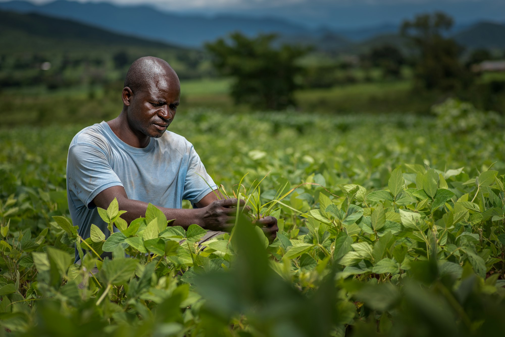
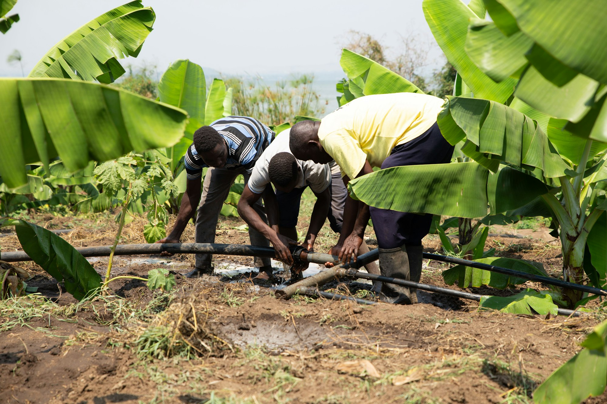
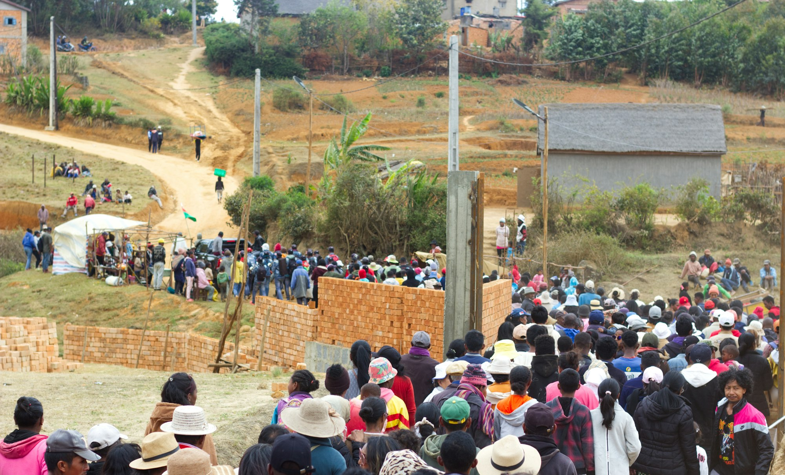

Everything we do sits under one of these three programs — the first is what we deliver, the second is how we know it is working, the third is how we make sure it was never ours alone to decide.

Strengthens household and community food systems through co-created, data-informed interventions that improve productivity, income, and resilience.

Builds the evidence base that drives every program decision, blending quantitative and participatory methods.

Ensures every solution is designed with, not for, the communities it serves.
As programs launch on the ground, we will document them here.